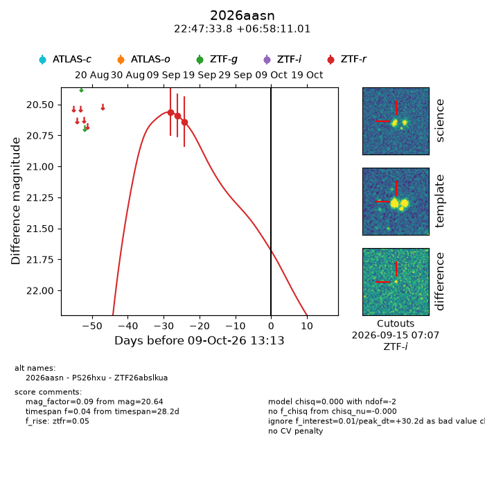
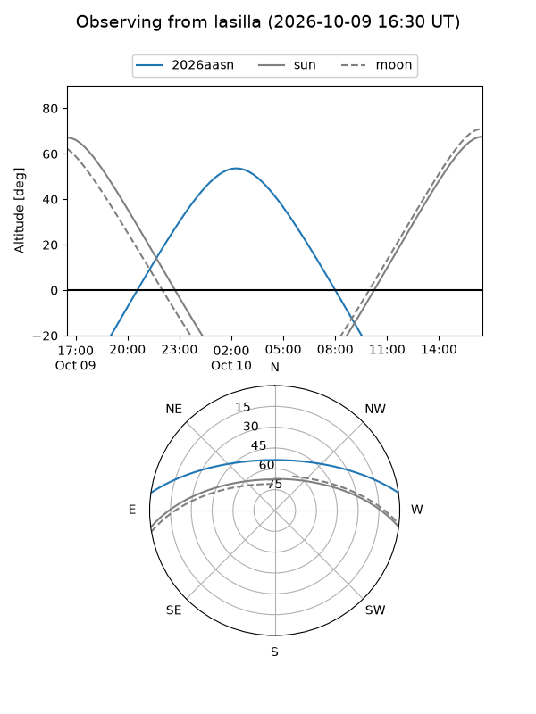
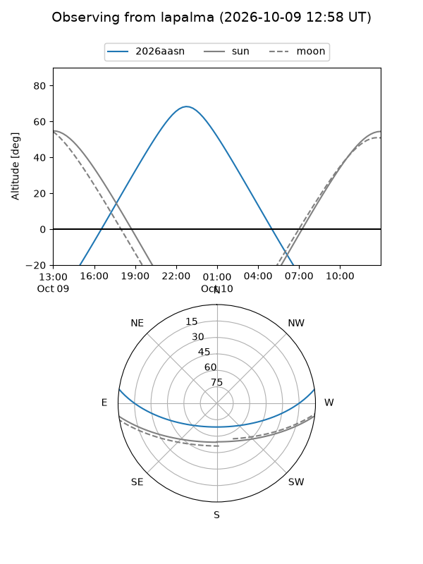
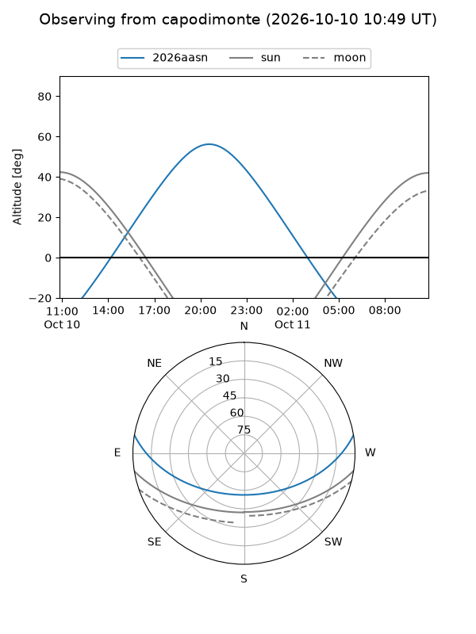
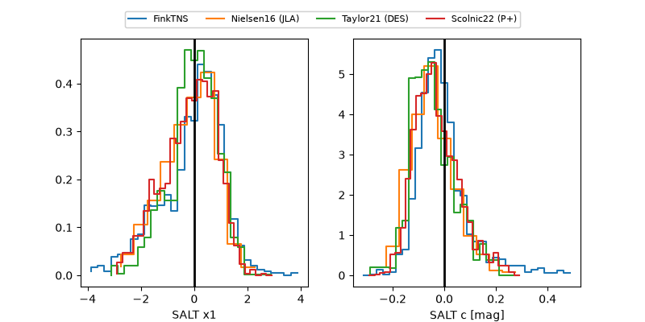

2026aasn
Target 2026aasn at 2026-10-09 13:15
Aliases and brokers:
FINK-ZTF: ztf.fink-portal.org/ZTF26abslkua
Lasair-ZTF: lasair-ztf.lsst.ac.uk/objects/ZTF26abslkua
ALeRCE-ZTF: alerce.online/object/ZTF26abslkua
YSE-PZ: ziggy.ucolick.org/yse/transient_detail/2026aasn
TNS name: wis-tns.org/object/2026aasn
Direct TNS query: direct search
alt names
ZTF26abslkua (ztf,fink_ztf)
2026aasn (tns,yse)
PS26hxu (panstarrs)
Coordinates:
equatorial (ra, dec) = 341.8910,+6.96973
equatorial (HMS+DMS) = 22:47:33.85,+06:58:11.01
galactic (l, b) = (77.0970,-44.59979)
Flags:
peak dt: +30.2
Photometry:
last ztfr=20.64
3 ztfr detections
Lightcurve

Visibility



Additional plots
